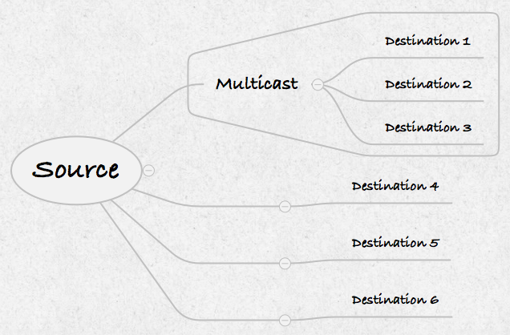

夜深人静，一个小黑屋子里发出神秘的嘀嘀嘀……嗒嗒嗒……嘀嘀嘀…… 的声音，谍战剧必不可少的画面
Multicast 和发电报有相似之处，一条消息发送给多个既定的目标群体。
下面一段话对 Multicast 的描述比我能描述的好很多：
Multicasting identifies logical groups of computers. A single message can then be sent to the group.
Multicasting uses the Internet Group Management Protocol (IGMP) to identify groups and group members. Routers will also use IGMP to send messages to subnets that have group members. The router actually doesn’t keep track of which hosts are members of which group, only that the subnet contains at least one member for each group. If we have multiple routers, they will communicate and exchange information about multicast groups that they have.
Each host on the network can belong to multiple multicast groups. Hosts can join or leave groups at any time. Multicast groups are identified by special IP addresses between the range of 224.0.0.0 and 239.255.255.255. Each group is assigned it’s own address. Addresses within the 224.0.0.0 range are reserved for local subnet communications.
When we use a switch to connect hosts, multicast messages are actually forwarded to all hosts on the hub or the switch.
如果对上面的内容理解有困难，可以搜索一下 Multicast 的理论，这里就不再赘述教科书上的内容了，只是简单的介绍和 Multicast 编程相关的主要部分，为了不要又臭又长，有些地方描述的不够准确，希望多多包涵，关键是理解重点，细节的地方请参考相关理论。
额外提一点，和 Broadcast 不同是的 Multicast 可以跨网段，但是需要交换机的支持。
Multicast 编程最关键的地方是：Multicast 的组是使用 IP 来标记的，不同的 IP 表示不同的组，Multicast 使用的 IP 地址范围是 224.0.0.0 到 239.255.255.255 之间。
Multicast 的逻辑大致如下：
- 例如我们使用 IP 225.20.40.20 定义一个 Multicast 的组
- 有多个客户端加入这个组（客户端就是我们写的接收 Multicast 消息的软件，加入时使用的 IP 也是 225.20.40.20，这个 IP 就是组的 ID）
- 发送 Multicast 消息给这个组时（消息的 Destination 的 IP 是 225.20.40.20）
- 所有加入到这个组的客户端都能接收到这个消息，实现了消息的按组发送。
下图是 Multicast 的示意图，Source 发送 Multicast 消息，只有加入组的 Destination 1，Destination 2， Destination 3 都能收到这个消息：

Multicast 的消息发送程序
Multicast 发送消息的程序和 Unicast 的几乎完全一样，只需要把udpSocket->writeDatagram(data.toUtf8(), QHostAddress::LocalHost, 13930)
替换为udpSocket->writeDatagram(data.toUtf8(), multicastAddress, 13930)
即把 Destination 的 Unicast 数据报的地址换为 Multicast 组的地址，这里我们只列出 main 函数，其他部分参考 Unicast 的程序。
1 | int main(int argc, char *argv[]) { |
Multicast 的消息接收程序
Multicast 的消息接收程序和 Unicast 的消息接收程序也是几乎完全一样，只需要把udpSocket->bind(13930, QUdpSocket::DontShareAddress)
替换为udpSocket->bind(QHostAddress::AnyIPv4, 13930, QUdpSocket::ShareAddress)
然后加入组udpSocket->joinMulticastGroup(QHostAddress("225.20.40.20"))
这里我们只列出 Multicast 接收程序的构造函数，其他部分和 Unicast 的程序都一样。
1 | MulticastReceiver::MulticastReceiver(QObject *parent) : QObject(parent) { |